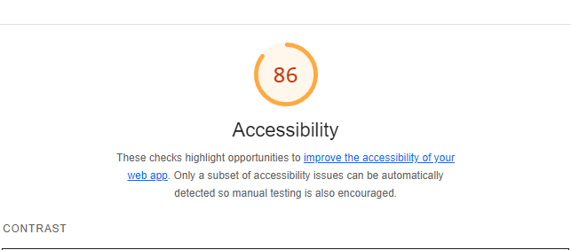

Analyse

Analyse av eget nettside
På denne siden så har jeg gjort analyse av min egen nettside. Under så kommer det da tabell på hva som er gjort og hva som ikke er bra, og hva som er endret på for å forbedre nettsiden og for å få bedre response. Det er google lighthouse som blir brukt til å analysere nettsiden.
Analyse
Før bilde
Før
Etter
Etter bilde

Fikk opp en del feil som kunne endres på som for eksempel at det var elementer i dl tag som var ikke med som gjorde at det ble feil. Fikk også feil på at iframe tag manglet titel, så la til titel også.
Etter endringer analyserte jeg nettsiden på nytt fikk jeg tilgjengeligheten til å ligge på 94.
Får i feilmelding hvor det mangler meta, legger til dette for hver av sidene
Etter endringer ble gjort og det ble lagt til meta tagg så gikk poenget opp til 90 og det er grønt nå.
12 Retningslinjene som finnes
Før bilde
Før
Etter
Etter bilde
Retningslinje 1.1. Tekstalternativer: Gi tekstalternativer til alt
ikke-tekstlig innhold, slik at det kan konverteres til formater
som brukerne har behov for, for eksempel stor skrift,
blindeskrift, tale, symboler eller enklere språk.
Retningslinje 1.2. Tidsbaserte medier: Gi alternativer til
tidsbaserte medier
Retningslinje 1.3. Mulig å tilpasse: Lag innhold som kan
presenteres på forskjellige måter (for eksempel med enklere
layout) uten at informasjon eller struktur går tapt.
Retningslinje 1.4. Mulig å skille fra hverandre: Gjør det
enklere for brukerne å se og høre innhold, blant annet ved å
skille forgrunnen fra bakgrunnen.
Retningslinje 2.1. Tilgjengelig med tastatur: Gjør all
funksjonaliteten tilgjengelig med tastatur.
Retningslinje 2.2. Nok tid: Gi brukerne nok tid til å lese og
bruke innhold.
Retningslinje 2.3. Anfall:Ikke utform innhold på en måte som
er kjent for å forårsake (epileptiske) anfall.
Retningslinje 2.4. Navigerbar: Gjør det mulig for brukerne å
navigere, finne innhold og vite hvor de befinner seg.
Retningslinje 3.1. Leselig: Gjør innholdet leselig og forståelig
Retningslinje 3.2. Forutsigbar: Sørg for at websider
presenteres og fungerer på forutsigbare måter.
Retningslinje 3.3. Inndatahjelp: Hjelp brukere med å unngå
feil og å rette opp feil.
Retningslinje 4.1. Kompatibel: Sørg for best mulig
kompatibilitet med aktuelle og fremtidige brukeragenter,
inkludert kompenserende teknologi.
Retningslinje krav som er oppfyllt
I oppgaven fikk beskjed om at nettsiden må bestå tre A-krav, tre AA-krav og et AAA-krav. Jeg har fuglt Retningslinje 1.1 punkt 1.1.1 ikke tekstelig innhold, retningslinje 2.4 punkt 2.4.2 sidetitler og 2.4.4 formål med lenke i kontekst er de punktene som jeg føler at jeg har oppfyllt i henhold til tre A-kravene.
Når det gjelder tre AA-krav, så fulgte jeg retningslinje 1.4.5 bilder av tekst hvor bilde blir beskrevet med tekst om bildet ikke laster inn, retningslinje 2.4 punkt 2.4.6 som beskriver overskrifter og ledetekster og retningslinje 3.1 punkt 3.1.2 språk av deler av innhold. Disse er de tre kravene jeg føler at jeg har da klart å følge i henhold til retningslinjene.
Når det gjelder siste kravet som da er AAA-krav så valgte jeg å legge til at jeg fuglte retningslinje 2.4.10 deloverskrifter som er det punktet. Grunnen til at jeg nevner den er begrunn av jeg har tatt med overskrifter på de jeg mener skal ha overskrift og brukt riktig tagger på disse.
Her er retningslinje som jeg føler også som jeg treffer på som jeg ikke har skrevet men lagt til på sjekkliste.Tilgjengelighetserklæring